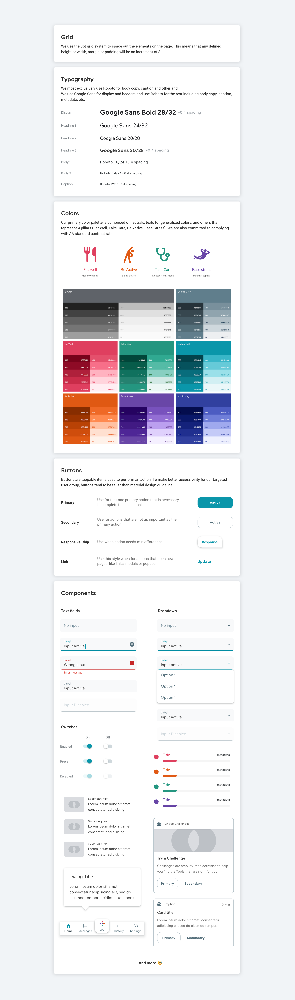
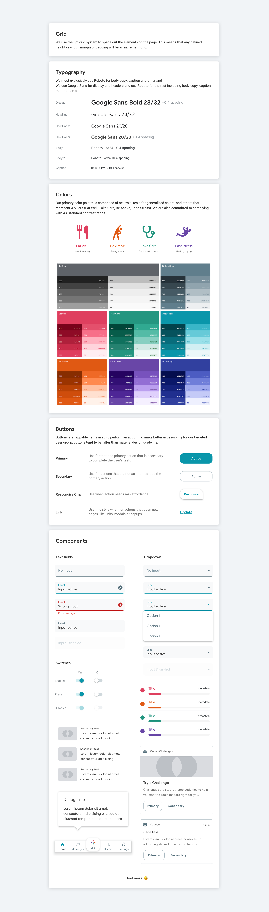

Onduo Mobile App
Duration: 2018-2019
My Role: UI/UX Designer
A program to help people manage their Type 2 diabetes

notification_important
Detailed process can be shared upon request. Feel free to email me at heyheyminjoo@gmail.com
What is Onduo?
Onduo, a joint venture between Verily and Sanofi, is a virtual diabetes clinic. Through the app, patients have access to a personal health coach & clinicians who can support them in managing their condition.
The Team
6 designers, 1 product managers, 4 engineers, 1 behavioral scientists, 2 UX researchers
My Role as UI/UX Designer
- Rapidly producing multiple concepts and prototypes; knowing when to apply pixel-perfect attention to detail, and when to make low-fi sketches and prototypes
- Partnering closely with engineering and product teams to find elegant but practical solutions to design challenges
- Listening to users to develop the right product strategy and solutions that delight our customers
- Conceptualize original ideas that bring simplicity and user friendliness to complex UX roadblocks
Introducing key projects
For Onduo, we made evolution and improvements that were made during 2018-2019. Here you can find some selected key projects that I was deeply involved and made impacts for. Details can be shared upon request.
 
